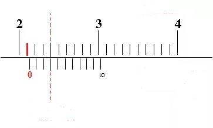

1. Sebuah batu bata diukur ketebalannya menggunakan jangka sorong.
Hasil pengukuran menunjukkan skala seperti pada pada gambar.
Berapakah tebal batu tersebut?
Skala utama = 5,1cm
Skala vernier= 5 x 0,01 = 0,05cm
Tebal Bata= 5,1 cm + 0,05 cm = 5,15cm
Jadi, tebal batu bata tersebut adalah 5,15cm.
2. Suatu balok kayu diukur menggunakan jangka sorong dengan hasil pengukuran seperti gambar di
Berapa tebal balok kayu tersebut ?
Skala utama = 7,2cm
Skala vernier= 12, 0.01 = 0.12cm
Tebal Balok= 7,2 cm + 0,12 cm = 7,32cm
Jadi, tebal balok kayu tersebut adalah 7,32cm.
3. Rudi mengukur diameter sebuah pipa menggunakan jangka sorong dengan hasil pengukuran sebagai berikut.

Skala utama = 4,1cm
Skala vernier= 3 x 0,01 = 0,03cm
Diameter Pipa= 4,1 cm + 0,03 cm = 4,13cm
Jadi, panjang diameter pipa tersebut adalah 4,13cm.
4. Lia membeli 4 buah buku tulis yang sama lalu mengukur ketebalan empat buku tersebut
dengan jangka sorong dengan hasil pengukuran sebagai berikut.
Skala utama = 12,0cm
Skala vernier = 2 x 0,01 = 0,02cm
Tebal 1 Buku = 12,02cm ÷ 4 = 3,005cm
Jadi, tebal 1 buku tulis tersebut adalah 3,005cm.
5. Lisa memiliki sebuah kotak pensil berbentuk balok dengan volume sebesar 656,25cm3.
Dia mengukur lebar kotak pensil tersebut menggunakan jangka sorong dengan hasil pengukuran sebagai berikut.
Rumus volume balok adalah Volume = panjang × lebar × tinggi
Tinggi kotak pensil tersebut = 5cm
Lebar kotak pensil tersebut adalah:
Skala utama = 8,1cm
Skala vernier = 6,5 x 0,01 = 0,65cm
Lebar kotak pensil = 8,1cm + 0,65cm = 8,75cm
Substitusikan nilai tinggi dan lebar ke rumus volume, maka:
Volume = panjang × lebar × tinggi
656,25cm3 = panjang × 8,75cm × 5cm
656,25cm3 = panjang × 43,75cm2
Panjang = 656,25cm3 ÷ 43,75cm2
Panjang = 15cm
Jadi, panjang kotak pensil tersebut adalah 15cm.